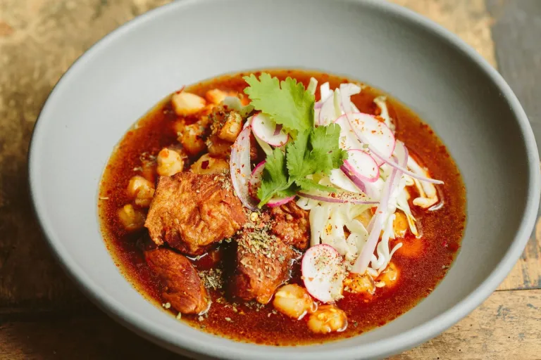
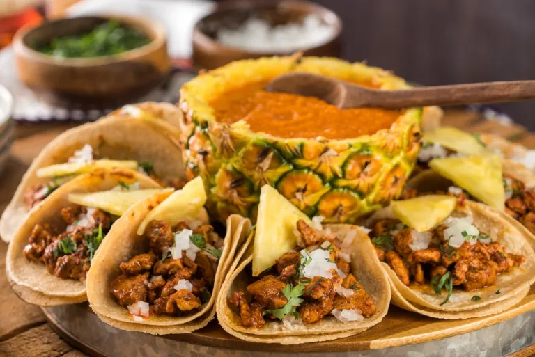
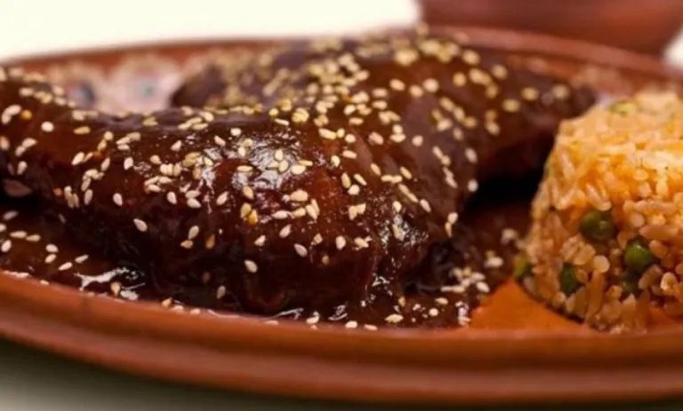
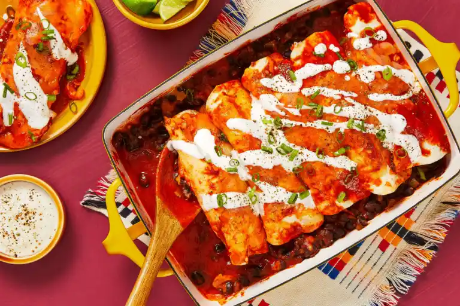

Culinária
O que as pessoas comem no México é fruto de uma rica mistura entre a cultura dos povos pré-colombianos e costumes levados ao país pelos colonizadores espanhóis, a partir do século XVI.
Os espanhóis chegaram ao México na região de Tenochtitlán, hoje conhecida como Cidade do México, onde os povos originários, como incas e astecas, tinham o milho na base de sua alimentação.
Aos poucos, os colonizadores foram introduzindo alimentos bastante consumidos na Europa no novo continente, como especiarias, vinhos, arroz e carne bovina, bem como frutas e vegetais que ainda não existiam por ali.
Um bom exemplo dessa mistura é a quesadilla: enquanto o queijo e a carne (bovina, suína ou de frango) foram introduzidos pelos colonos europeus, o milho e o chilli representam a influência tradicional dos povos pré-colombianos.
Com o passar do tempo, os pratos foram adquirindo sabores específicos de cada região, transformando a culinária mexicana em uma espécie de saborosa colcha de retalhos gastronômicos.
Na região próxima ao Texas (EUA), que já fez parte do território mexicano, é muito comum a culinária tex-mex, por exemplo, misturando sabores típicos do país com iguarias estadunidenses, como o tradicional churrasco.
Em 2010 a Unesco declarou a gastronomia mexicana patrimônio imaterial mundial, sobretudo por conta de técnicas de produção agrícola e preparo que existem desde a época pré-colonial.
Um dos destaques é o método de nixtamalização, para cozimento e maceração do milho, base da alimentação no país.
1 - Pozole
Com certeza o pozole deveria encabeçar essa lista de pratos típicos do México. Afinal, é encontrado em praticamente todo o país, desde barraquinhas de rua até sofisticados restaurantes. Essa sopa de sabor inconfundível merece iniciar nossa seleção. A base do pozole é o cacahuacintle, um tipo de milho cuja principal característica é o tamanho acentuado de seus grãos. Após o cozimento do milho, que costuma durar horas, são acrescentados os demais ingredientes que mudam de acordo com a região e a tradição do cozinheiro.
2 - Tacos al Pastor
Com certeza este prato é a estrela mexicana por excelência. Os tacos al pastor são parte da cultura do país e você pode encontra-los em cada esquina. Inesquecível! O site Taste Atlas, considerado o Google Maps de gastronomia, anunciou que o prato preferido dos mexicanos, o tacos al pastor, foi eleito melhor prato do mundo. Essa comida suculenta ganhou 4,4 estrelas, em uma lista de 100, seguida apenas pela pizza napolitana da Itália e pela lasanha à bolonhesa. Todos nós os conhecemos, seja antes, durante ou depois de uma festa. Tacos al pastor é o prato de rua mexicano por excelência. Todos eles têm a sua forma de definir o preparo perfeito: com ou sem limão, com molho vermelho ou verde, com e sem legumes, mas sempre há algo em comum: porco marinado e servido com rodelas de abacaxi.
3 - Mole
O mole é uma iguaria mexicana, um dos pratos com sabor mais marcante entre as comidas típicas do México. É um tipo de molho, cuja base é o chilli, ervas aromáticas fortes e sementes moídas. Normalmente, ele é preparado para acompanhar outros pratos à base de carne, especialmente de aves. A receita poblana (oriunda de Puebla) é reconhecida internacionalmente como exemplar da gastronomia mexicana. O que se deve ao acréscimo do cacau amargo à composição. Ao saboreá-lo, o paladar desfruta de inusitada explosão de sabores do picante ao doce, passando pelo amargo e azedo.
4 - Enchiladas
As famosas enchiladas enchem os olhos e agradam ao paladar. Já as conhecemos pelos vários restaurantes de comida mexicana espalhados pelo Brasil. Mas os exemplares que aqui encontramos não possuem o sabor característico que apenas pode ser aferido diretamente nas cozinhas mexicanas. A apresentação das enchiladas é bem conhecida: tortilhas de milho recheadas com um tipo de carne e molhos a escolha. O acompanhamento pode ser vegetais frescos ou mesmo o guacamole. Mas se você a pedir em diferentes regiões ou cidades, perceberá as diferenças de sabor.